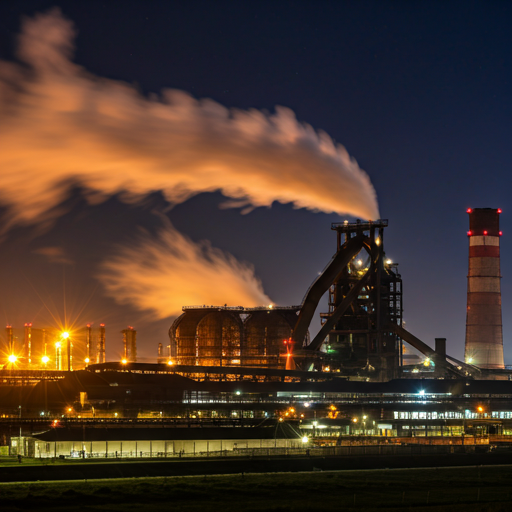
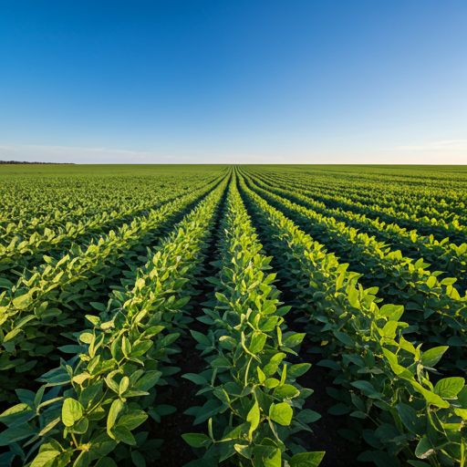
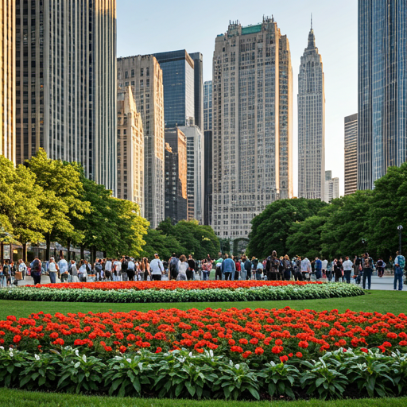
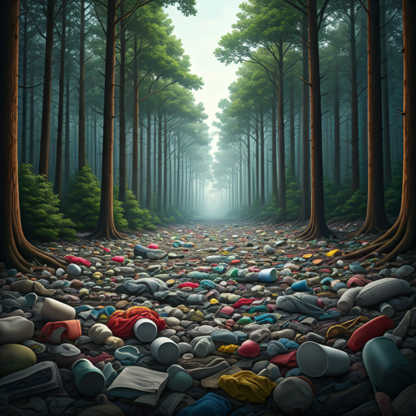

Industrialização: A produção em larga escala gera poluição do ar, da água e do solo, além de consumir grandes quantidades de recursos naturais.

Agricultura:O uso de agrotóxicos, a derrubada de florestas para a criação de pastagens e o cultivo, e a erosão do solo são alguns dos impactos causados pela atividade agrícola.

Urbanização: O crescimento desordenado das cidades gera problemas como o aumento da produção de lixo, a poluição da água e do ar, e a ocupação de áreas verdes.

Exploração de recursos naturais: O desmatamento, a extração de minérios, petróleo e gás natural causa danos ao meio ambiente, como a contaminação de solos e águas, e a destruição de habitats.

Consumo excessivo: O estilo de vida consumista gera grande quantidade de resíduos e demanda por recursos naturais, o que pressiona os ecossistemas.
